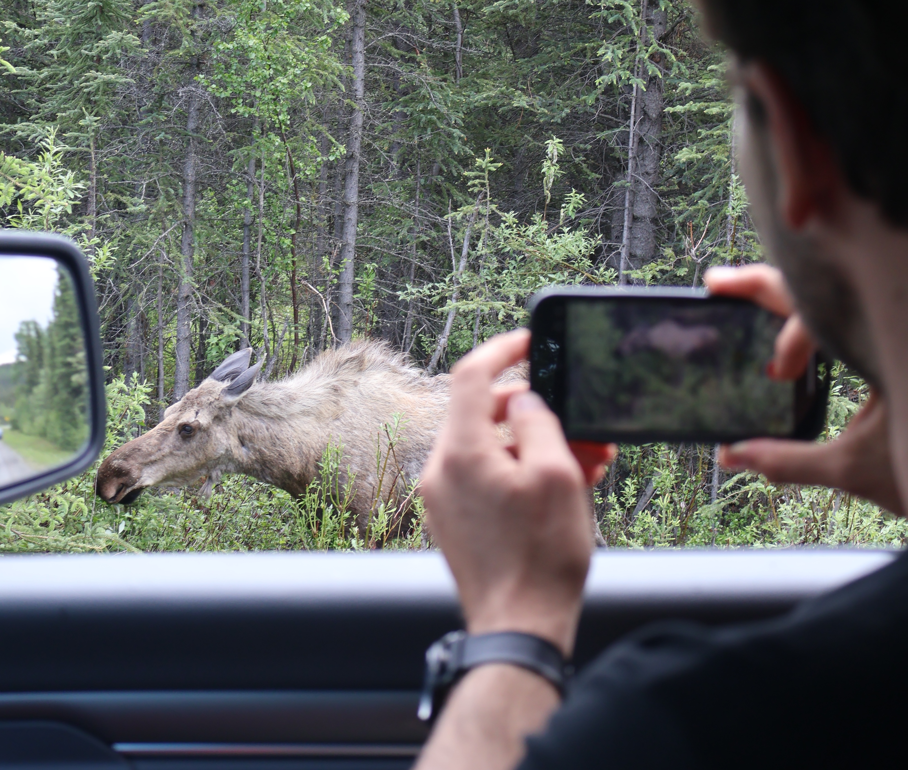

AKA - a field ecologist discovers how heartbreaking it is to bury the enormity of work required to parameterize and benchmark a model into the supplement section of a paper
As part of my NSF Postdoctoral Fellowship exploring interactions between fire and biotic disturbances in Interior Alaska, I’ve been parameterizing moose and hare for the model iLand using the biotic disturbance model BITE. This has lead to some interesting conversations over the last few months - several unsuspecting new introductions at conferences have stared at me, slightly blankly, before asking “so, there are tiny moose in your model?”1
1 Reader, I would love
Honkaniemi, Juha, Werner Rammer, and Rupert Seidl. 2021. “From Mycelia to Mastodons A General Approach for Simulating Biotic Disturbances in Forest Ecosystems.”Environmental Modelling & Software 138 (April): 104977. https://doi.org/10.1016/j.envsoft.2021.104977.
BITE (full name: BIotic disTurbance Engine) is a module built by the very smart Juha Honkankiemi (LUKE) and Werner Rammer (Technical University of Munich) to simulate a whole world of biotic disturbances (Honkaniemi, Rammer, and Seidl 2021).
The term “biotic disturbances” is itself, a catchall - megafauna like moose or mastodons are biotic disturbances, insects like aspen leaf miner or emerald ash borer are biotic disturbances, fungi-driven pathogens like aspen running canker are biotic disturbances. Called “agents” for short, each of these types of disturbances occur in very different ways across very different scales - if we assume that mastodons behaved similarly to modern elephants, they might have traveled up to 35 miles within a day, while emerald ash borer are creeping across the United States at a pace of a half a mile a year (assuming they don’t get into your firewood).
While a landscape model might be able to easily represent an individual mastodon roaming across a landscape, modeling each individual fungi spore across a landscape is absolutely not possible computationally. To deal with this, BITE represents agents in units of biomass. Kilograms of mastodon move across cells within the model, uprooting kilograms of trees and consuming kilograms of spruce needles before falling into kilograms of tar pits2.
2 (technically no, though I’m sure you could overthink it and implement it as a bit)
This means you have two key decisions to make when starting to parameterize a new agent:
How many are there?
What do they weigh?
Answering both is complicated.
How many moose are there?
Well, total?
Apparantly, 2.2 million moose, split evenly between North America and Eurasia (Moll et al. 2022).
Moll, Remington J., Mairi K. P. Poisson, David R. Heit, Henry Jones, Peter J. Pekins, and Lee Kantar. 2022. “A Review of Methods to Estimate and Monitor Moose Density and Abundance.”Alces: A Journal Devoted to the Biology and Management of Moose 58: 31–49. https://alcesjournal.org/index.php/alces/article/view/1881.
Where do we get those numbers?
It’s hard to count moose. Logistically, financially, ecologically3.
3 maybe emotionally?
4 (except for this one pictured below, who was chomping on willow in the literal driveway to Denali National Park)
Moose behavior itself makes it hard to count moose - moose use dense forest cover, they tend to avoid areas where humans are active4, and they’re most active at dusk and dawn.

More importantly, they’re highly mobile - a single moose can move up to 65 miles in a day.
To adequately count moose, you need to count moose over a large area, which is expensive.
Aerial surveys are the most common method - counting moose in a known area from a helicopter or a plane. This doesn’t account for the moose not spotted (an issue in wildlife ecology often referred to as “sightability”), but it still remains more cost-effective than methods like pellet surveys or camera trapping, which face the same sightability issue but typically require more resources.
Note
An aside - climate change may make those aerial surveys more difficult. Later snowfall in the fall makes it more difficult to pick out brown moose against brown mud (Brinkman et al. 2023). See (Reinking et al. 2022) for more on the important relationship between wildlife and snow and also the incredible phrasing of “snow professionals” and “snow science community”5.
5 I love my job
Reinking, Adele K., Stine Højlund Pedersen, Kelly Elder, Natalie T. Boelman, Thomas W. Glass, Brendan A. Oates, Scott Bergen, et al. 2022. “Collaborative Wildlifesnow Science: Integrating Wildlife and Snow Expertise to Improve Research and Management.”Ecosphere 13 (6): e4094. https://doi.org/10.1002/ecs2.4094.
Brinkman, Todd Jared, Kalin Seaton, Adele Reinking, Glen E. Liston, Laura Prugh, Callum Cunningham, and Natalie Boelman. 2023. “Changing Snow Conditions Are Hindering Wildlife Monitoring and Management” 2023 (December): B32C–01. https://ui.adsabs.harvard.edu/abs/2023AGUFM.B32C..01B.
6 not everyone reports
You can also count moose using harvest data - hunters are required to provide data on the number of moose they harvest, and while that data certainly has some limitations6, it does give us a good sense year to year for the density of moose across the state.
Okay, but k8, how many moose?
According to Alaska Fish and Game, there are an estimated 175,000 moose in Alaska.
Those 175,000 are spread out in densities anywhere from 1 to 150 moose per 30 square miles7. That’s over the entire state however, including tundra where moose can be quite scarce.
Game Management Units across Alaska, source: Alaska Department of Fish and Game
According to their most recent report, they counted 1,395 moose in 2019, 79% of which were adults. Correcting for sightability, they estimate the total population is between 9,581 and 13,959 moose across 20A, or 2.3 moose per square mile.
That brings us to the second question.
What do moose weigh?
Well, I started with the obvious route but googling how much does a moose weigh doesn’t get you very far. It does tell you however, that moose are generally largest in Alaska8, and smaller further south (Pastor et al. 1988).
8 cue the obligatory “everything’s bigger up here”
Pastor, John, Robert J. Naiman, Bradley Dewey, and Pamela McInnes. 1988. “Moose, Microbes, and the Boreal Forest.”BioScience 38 (11): 770–77. https://doi.org/10.2307/1310786.
What do moose weigh in Alaska?
Googling how much does a moose weigh alaska leads to a page from the Alaska Department of Fish and Game that gives moose an average weight of 550 kilograms. They cite (Bishop 1988), who puts bull moose between 540 - 680 kilograms and cows between 360 - 590 kg in Alaska.
9 moose often put on weight in the summer, reaching “peak body mass” in the fall in preparation for the long winter (Mautz 1978, Adamczewski et al. 1987, Schwartz et al. 1987)
10 this is how manifestation works, right?
Obviously body mass also varies across a season9, across age, or depending on predator pressure. But this is the point at which I get to pull the time-honored card of not in the scope of the research, and move on. Maybe, if moose appear to have a critical role mitigating the impact of fire on Alaskan forests, someone will give me funding to build a more complicated model of moose population dynamics, maybe one that incorporates twinning rates and body mass10.
The number of calves they produce depends in turn on the conditions that year - was there enough food? was it warm enough?
So, if moose weight depends on the gender ratio across the population, what’s the gender ratio of the moose population in Alaska? Surprisingly, we have a good grasp of this - hunting targets male moose, so populations are maintained at a level of >25 bulls per 100 cows (after hunting).
What do moose weigh in the model?
But, the model needs a single number. And iLand doesn’t represent seasons. Nor population demographics (at least not yet). So, to maintain my sanitymake some simplifying assumptions, I’ll take a weighted average.
I’ll start by assuming an average calf weighs XX kilograms, a cow weighs 447.5 kg and a bull weighs 683.5 kg. Assuming 20% of the populations are calves, and there’s a 3:10 ratio of cows to bulls within adults, I can take a weighted average.
If, according to Fish and Game, there are 2.3 moose per square mile in Game Unit 20A, that means there are XX moose in my 60,000 acre model landscape.
So, in the BITE script for moose, I now have a line that looks like this:
initialAgentBiomass:5.95*465// initial agent biomass in each cell calculated assuming moose density to be 0.95 animals per 1 km2 (152 per 1000) * average mass of 465 kg (estimated) per animal
More information
Session Info
sessionInfo()
R version 4.4.1 (2024-06-14)
Platform: aarch64-apple-darwin20
Running under: macOS Sonoma 14.0
Matrix products: default
BLAS: /Library/Frameworks/R.framework/Versions/4.4-arm64/Resources/lib/libRblas.0.dylib
LAPACK: /Library/Frameworks/R.framework/Versions/4.4-arm64/Resources/lib/libRlapack.dylib; LAPACK version 3.12.0
locale:
[1] en_US.UTF-8/en_US.UTF-8/en_US.UTF-8/C/en_US.UTF-8/en_US.UTF-8
time zone: America/Chicago
tzcode source: internal
attached base packages:
[1] stats graphics grDevices utils datasets methods base
loaded via a namespace (and not attached):
[1] htmlwidgets_1.6.4 compiler_4.4.1 fastmap_1.2.0 cli_3.6.3
[5] tools_4.4.1 htmltools_0.5.8.1 yaml_2.3.10 rmarkdown_2.28
[9] knitr_1.48 jsonlite_1.8.9 xfun_0.47 digest_0.6.37
[13] rlang_1.1.4 evaluate_1.0.0